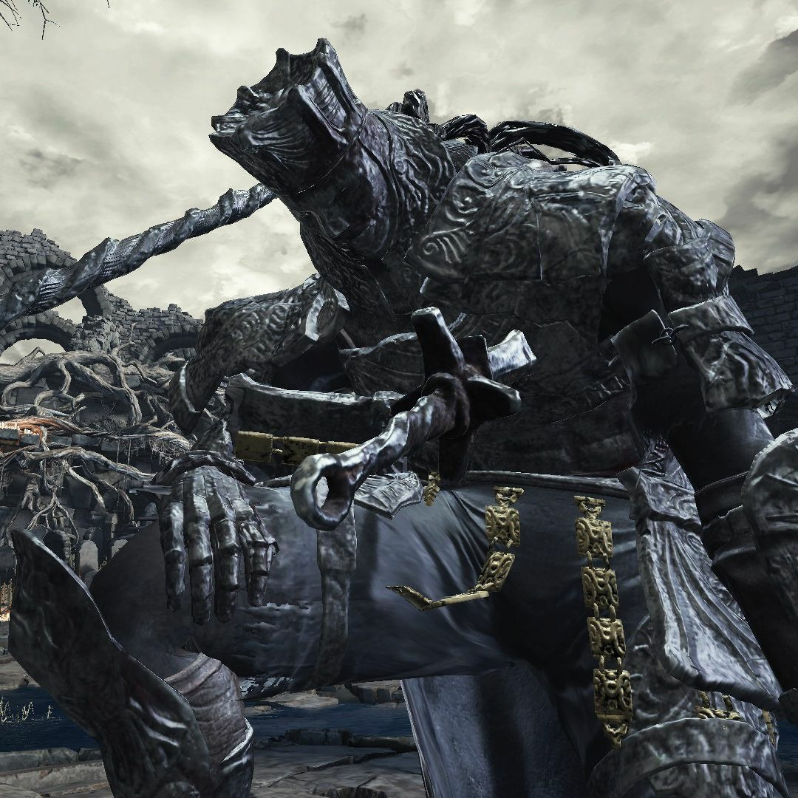

Iudex Gundyr es un jefe en Dark Souls III. Es el primer jefe que los jugadores encuentran. Iudex Gundyr es un humanoide grande, revestido en armadura pesada, que ataca al jugador usando una alabarda larga. El jugador verá una espada atravesando su pecho cuando lo enfrenta por primera vez. Luego de haber reducido su vida hasta cierta cantidad, una gigantesca masa negra emergerá de su cuello y le dará a Gundyr acceso a movimientos y ataques adicionales. Este jefe no es opcional y el jugador deberá enfrentarlo para ganar acceso al Santuario del Enlace de Fuego.
"Un Campeón elegido para probar y juzgar a aquellos que son dignos de enlazar la Primera Llama"
